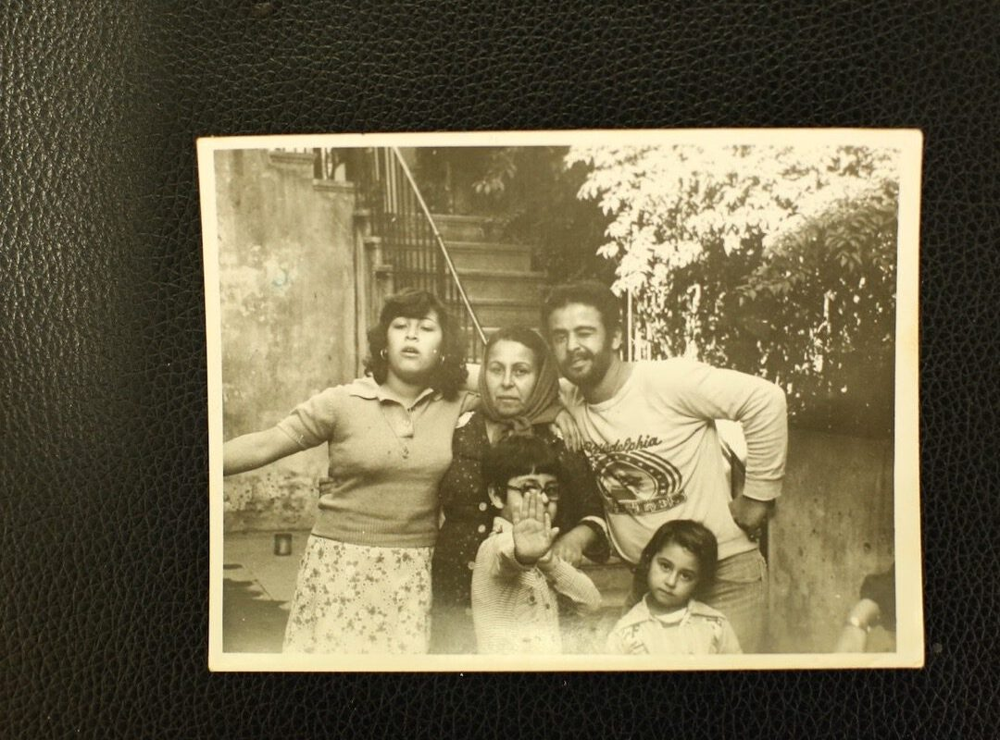
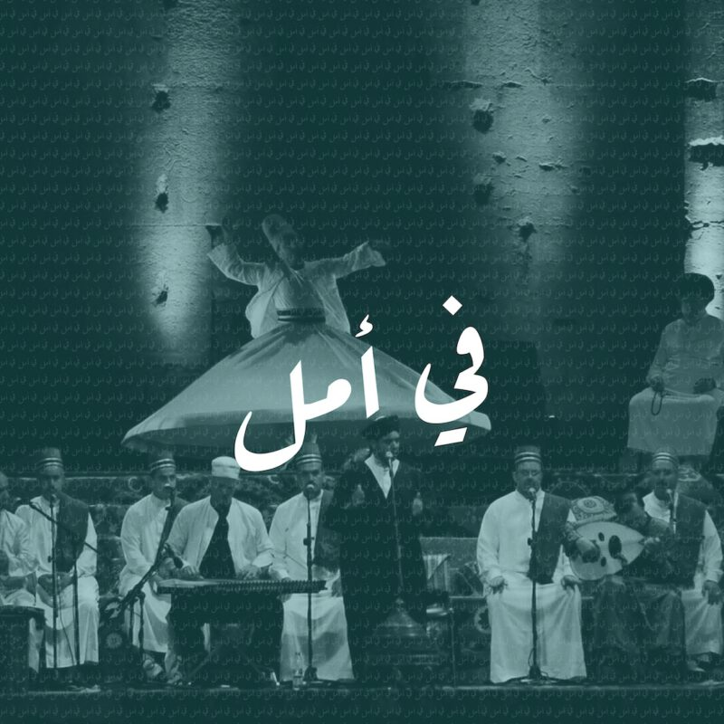
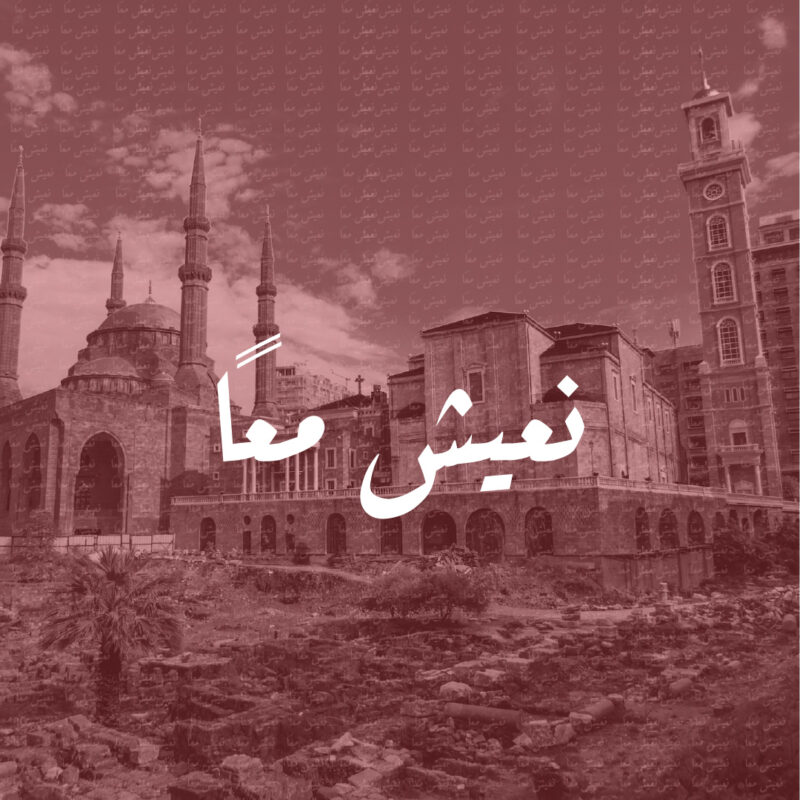
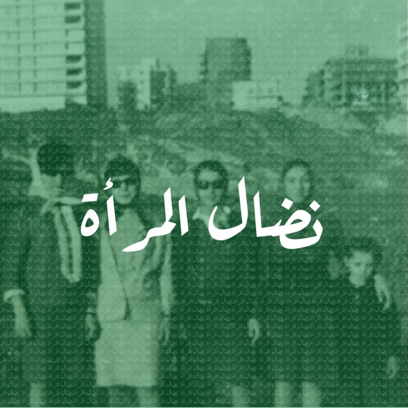
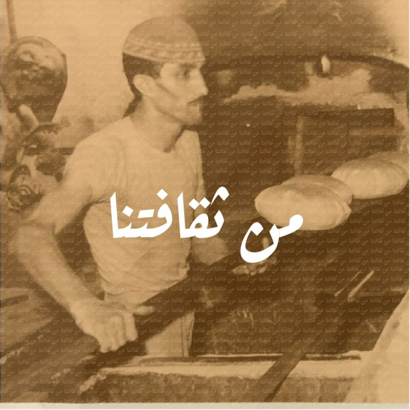
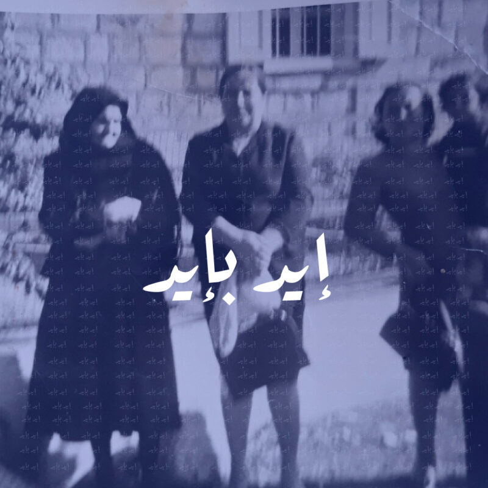
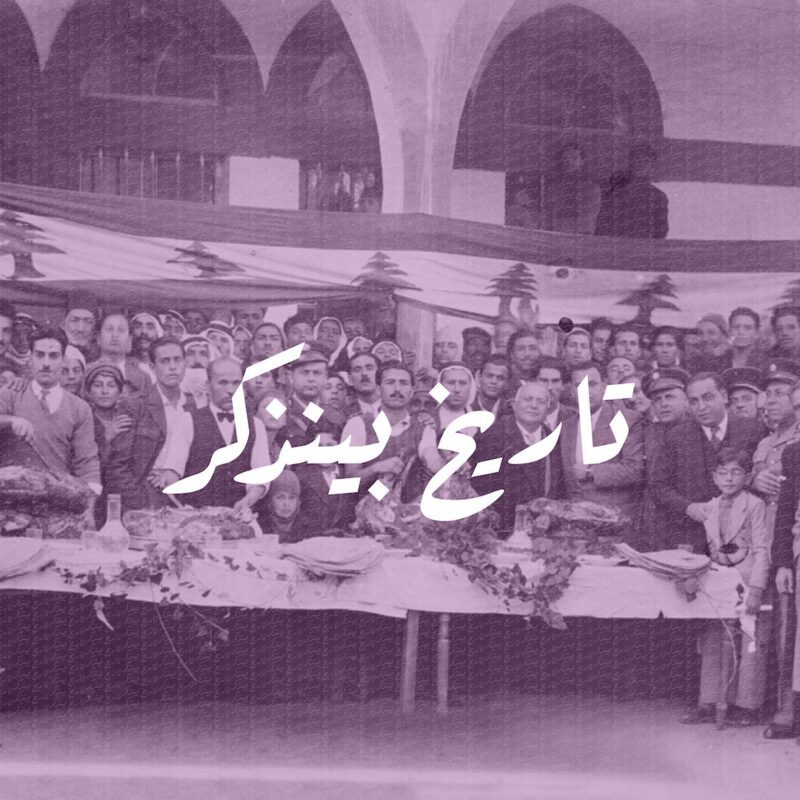

بالسلم وبالحرب
قصص عن الحرب والأمل والصمود

في أمل
حكايات الأمل وسط الظروف الصعبة

نعيش معًا
قصص التعايش والتضامن

نضال المرأة
حكايات نساء قاومن وانتصرن

من ثقافتنا
موروث ثقافي لبناني

إيد بإيد
قصص التضامن والمساعدة

تاريخ بينذكر
ذاكرة لبنان الحية